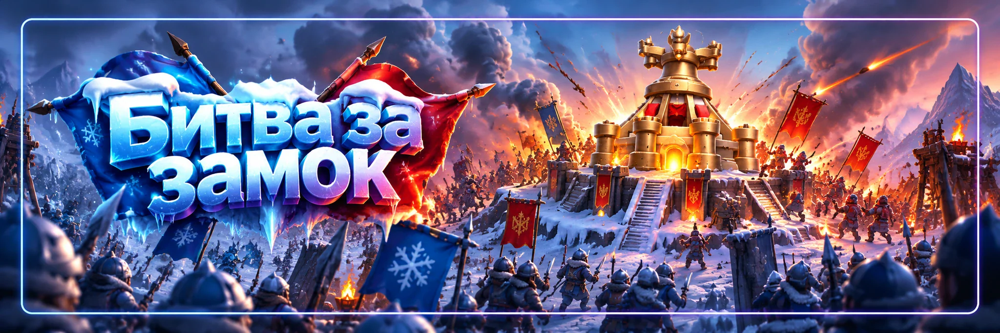

Битва за замок
Автор: SOVA58
Сражение за Солнечный замок и орудийные башни вокруг него.
Проверяйте таймер в своей RU-версии: в старой справке разработчика ещё встречаются правила «3 часа подряд / 6 часов битвы», а более новые руководства указывают «2,5 часа / 5 часов». Планируйте бой по условиям, показанным в самом событии.
🌪️ Перед началом
За 2 часа до снятия щита в красной зоне начинается буря. Если телепортироваться туда слишком рано, город может выбросить в случайное место.
После окончания бури занимаем позиции ближе к замку.
🎯 Что важнее всего
Основная цель всегда Солнечный замок.
Орудийные башни тоже важны: если башню контролирует противник, она атакует гарнизон замка. Если замок и башня принадлежат одной стороне, башня по своему гарнизону не стреляет.
⚔️ Как штурмуем
Сильный гарнизон выбиваем организованными сборами. Заранее назначаем капитанов, сверяем первые экспедиционные навыки участников и состав войск с защитой противника.
Одиночными маршами не разбиваемся о сильный гарнизон.
🛡️ После захвата
Сразу заполняем гарнизон, возвращаем выбитые марши и отправляем подкрепления. Пустеющий замок очень быстро выбивают.
Бонусы защитников: общие боевые характеристики гарнизона игра берёт у участника с наибольшими бонусами, а из героев других защитников учитывает четыре первых экспедиционных навыка. Характеристики всех игроков не складываются автоматически.
Кого ставить первым в подкреплении: из доступных ранних героев для защиты подходят Патрик (до +25% здоровья всех войск) и Сергей (до −20% получаемого урона). Возможные запасные варианты: Бахити, Лин Сюэ и Лумак Бокан с защитными первыми экспедиционными навыками. Не используйте атакующих Джесси и Джассера как универсальный выбор для обороны.
Роль главного защитника отличается: ему нужна сильная полноценная тройка PvP-героев и высокие общие бонусы; список героев подкреплений не является готовым составом главного гарнизона. Перед боем согласуйте с альянсом четыре навыка поддержки и убедитесь, что их не вытесняют неподходящие навыки более высокого уровня.
Порядок пополнения: приоритет получают войска высшего уровня; при равном уровне сначала пехота, затем копейщики, затем стрелки. Проверяйте состав гарнизона и не оставляйте защиту без нужного переднего ряда.
🪖 Соотношение войск в гарнизоне
Универсального идеального состава нет. Пехота принимает удары впереди, копейщики находятся в среднем ряду, стрелки наносят урон с задней линии. Для начальной проверки обороны можно использовать 60% пехоты / 20% копейщиков / 20% стрелков. Если передняя линия гибнет слишком быстро, сравните по отчётам вариант 70 / 10 / 20. Это примеры для испытаний, а не обязательная тактика RU-версии.
Состав зависит от героев главного защитника, уровней войск и атакующего соперника. Следите за тем, сколько пехоты остаётся после удара, и своевременно пополняйте гарнизон. Высокоуровневые войска имеют приоритет при пополнении, поэтому отправленное соотношение не обязательно совпадает с фактическим составом внутри замка. Не копируйте пропорции для Медведя; перед боем согласуйте состав с R4/R5.
💥 Орудийные башни
Отдельная группа может выбивать противника из башен, удерживать их и быстро возвращать после потери.
Но не отправляем на башни весь альянс, пока идёт борьба за сам замок.
👥 Роли
- 🔥 Сильные игроки ведут основные сборы.
- 🛡️ Защитники держат замок и пополняют гарнизон.
- 💥 Группа башен контролирует орудийные башни.
- 🐣 Игроки поменьше занимают места вокруг замка, вступают в сборы, дают подкрепления и мешают противнику удобно расставиться.
Здесь полезен каждый.
🦸 Герои
Лидер сбора использует лучший PvP-состав: в бою работают экспедиционные навыки всей его тройки. Участник ставит подходящего героя первым: в общий набор попадает его первый экспедиционный навык, причём учитываются до четырёх таких навыков участников. По игровым руководствам, приоритет имеют навыки более высокого уровня; при равенстве учитывается порядок вступления. Четыре неподходящих навыка 5-го уровня могут занять все места, поэтому состав подкреплений и список действующих навыков нужно проверять заранее. Повтор героя у нескольких участников разрешён, но разные типы полезных усилений могут работать выгоднее повторов. Для нападения и для обороны гарнизона полезные навыки могут различаться.
Первые герои для атакующих сборов: ранний выбор — Джесси и Джассер (наносимый урон), Со-Юн (атака войск). Из более поздних поколений рассматривайте Гвен (урон, получаемый целью), Рейну (обычные атаки), Бредли, Магнуса и Руфуса (атака), Бланшетт и Хервор (смертоносность). Выбирайте героев, доступных в вашем государстве, и смотрите уровень первого экспедиционного навыка каждого участника.
Не путайте типы усилений: атака, смертоносность, наносимый урон и урон обычных атак не являются одним и тем же показателем. Проверьте, какие четыре навыка участников действительно вошли в сбор, и сравнивайте результат с отчётами. Герои с периодическими или условными эффектами, например Уэйн или Рене, не равнозначны постоянным бонусам только по числу процентов.
💾 Шаблоны отрядов
Перед битвой подготовьте отдельные сохранённые построения для штурма, участия в чужом атакующем сборе и подкрепления защиты. При вступлении в чужой сбор проверьте первого героя слева: нужен согласованный первый экспедиционный навык. В защитном построении первым ставьте героя с полезным оборонительным эффектом.
Сохранённое построение выбирается при отправке отряда; не рассчитывайте на автоматическое переключение между атакой и защитой. Проверьте доступность героев, число войск и выбранный шаблон перед каждой отправкой, особенно после возврата или перераспределения маршей.
📍 Позиция вокруг замка
Чем ближе город к нужной позиции, тем быстрее можно вступить в сбор, вернуть марш и отправить подкрепление. Поэтому места вокруг замка тоже имеют значение.
🏥 Лечение
Бой долгий, поэтому медпункт контролируем постоянно.
- ✅ лечим небольшими партиями;
- ✅ используем помощь альянса;
- ✅ не ждём переполнения;
- ✅ сохраняем ускорения на тяжёлые этапы.
🎯 Если противник сильнее
Не повторяем без изменений один и тот же проигрышный сбор. Сначала изучаем боевые отчёты и состав защиты. При необходимости согласуем два-три сбора так, чтобы они прибыли к замку почти одновременно, сокращая время на пополнение гарнизона между ударами. Время запуска может различаться из-за скорости и расстояния марша.
Планируем не только захват, но и немедленное заполнение замка своими войсками. Башни можно использовать для давления, но нельзя оставлять ради них основной штурм без достаточных сил. Даже синхронные удары не гарантируют победу над более сильным гарнизоном.
💬 Опыт игроков
- ✅ Замок важнее личных очков.
- ✅ После захвата подкрепление отправляем сразу.
- ✅ Башни нельзя отдавать сопернику надолго.
- ✅ Сборы лучше заранее назначать за конкретными капитанами.
- ✅ Игроки средней силы полезны наполнением сборов и защитой.
- ✅ Малыши вокруг замка тоже делают огромную работу, перекрывая противнику удобные позиции.
🚫 Частые ошибки
- ❌ атаковать по одному;
- ❌ оставить замок без быстрого подкрепления;
- ❌ всем уйти на башни;
- ❌ игнорировать команды;
- ❌ гоняться за личными очками;
- ❌ стоять далеко от своей группы;
- ❌ забыть про лечение.
✅ Быстрая схема
Главное
Битву за замок выигрывает не один самый сильный игрок.
Сильные ведут сборы, остальные заполняют их, держат башни, подкрепляют гарнизон и занимают пространство вокруг замка.